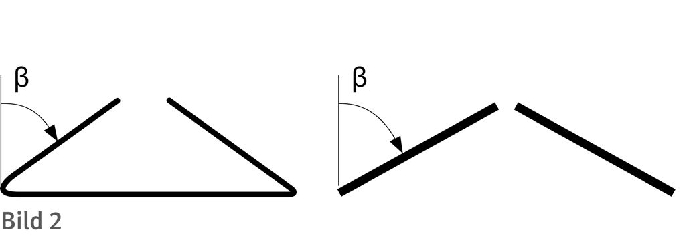
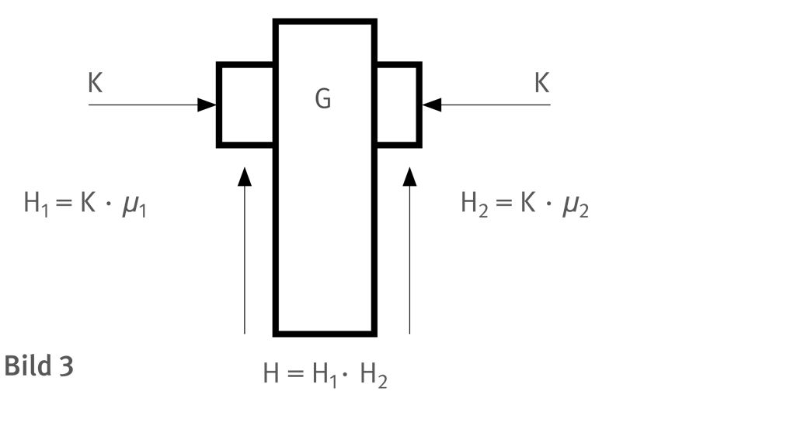

* Die Auszüge aus der VBG 9a werden im Original mit allen darin enthaltenen Verweisen (auch auf zurückgezogene und nicht mehr aktuelle Normen) aufgeführt. Diese Verweise sind im Literaturverzeichnis der vorliegenden DGUV Regel nicht enthalten.
Der Anhang A enthält Auszüge aus der ehemaligen Unfallverhütungsvorschrift "Lastaufnahmeeinrichtungen im Hebezeugbetrieb" VBG 9a vom 01. Oktober 1990 in der Fassung vom 01. Januar 1997 mit Durchführungsanweisungen vom April 1998. Die Auszüge beziehen sich nur auf Abschnitt III "Bau und Ausrüstung" und Abschnitt VII "Übergangs- und Ausführungsbestimmungen".
§ 3
(1) Der Unternehmer hat dafür zu sorgen, dass Lastaufnahmeeinrichtungen im Hebezeugbetrieb entsprechend den Bestimmungen dieses Abschnittes III beschaffen sind.
(2) Für Lastaufnahmeeinrichtungen, die unter den Anwendungsbereich der Richtlinie des Rates vom 14. Juni 1989 zur Angleichung der Rechtsvorschriften der Mitgliedstaaten für Maschinen (89/392/EWG), zuletzt geändert durch die Richtlinie des Rates vom 20. Juni 1991 (91/368/EWG), und der Richtlinie des Rates vom 30. November 1989 über Mindestvorschriften für Sicherheit und Gesundheitsschutz bei Benutzung von Arbeitsmitteln durch Arbeitnehmer bei der Arbeit (89/655/EWG) fallen, gelten die folgenden Bestimmungen.
(3) Für Lastaufnahmeeinrichtungen, die unter den Anwendungsbereich der Richtlinie 89/392/EWG fallen und nach dem 31. Dezember 1992 erstmals in Betrieb genommen werden, gelten anstatt der Beschaffenheitsanforderungen dieses Abschnittes die Beschaffenheitsanforderungen des Anhangs I der Richtlinie. Der Unternehmer darf Lastaufnahmeeinrichtungen erstmals nur in Betrieb nehmen, wenn ihre Übereinstimmung mit den Bestimmungen der Richtlinie durch eine EG-Konformitätserklärung nach Anhang II sowie das EG-Zeichen nach Anhang III dieser Richtlinie nachgewiesen ist.
Durchführungsanweisung zu § 3 Abs. 3:
Keine Beschaffenheitsanforderungen enthalten die Bestimmungen der §§ 6 und 19 Abs. 1.
(4) Absatz 3 gilt nicht für Lastaufnahmeeinrichtungen, die den Beschaffenheitsanforderungen dieses Abschnittes entsprechen und bis zum 31. Dezember 1994 in den Verkehr gebracht worden sind.
(5) Lastaufnahmeeinrichtungen, die nicht unter Absatz 3 fallen, müssen spätestens am 1. Januar 1997 mindestens den Anforderungen der Richtlinie 89/655/EWG entsprechen.
§ 4
(1) An Lastaufnahmemitteln müssen folgende Angaben deutlich erkennbar und dauerhaft angebracht sein:
Durchführungsanweisung zu § 4 Abs. 1:
Die Forderung nach dauerhafter Anbringung ist erfüllt, wenn z. B. angenietete oder angeschraubte Schilder aus Aluminium oder aus anderen geeigneten, möglichst korrosionsbeständigen Metallen oder Metalllegierungen verwendet werden.
Aufgeklebte oder selbstklebende Fabrikschilder, insbesondere Folienschilder, sind bei Verwendung im Freien, bei rauem oder mit starker Verschmutzung verbundenem Betrieb, bei regelmäßiger Einwirkung von hohen Temperaturen, Nässe, Fetten oder lösemittelhaltigen Arbeitsstoffen nicht geeignet.
Durchführungsanweisung zu § 4 Abs. 1 Nr. 2. und 3.:
Als Einheiten sollen verwendet werden
(2) Zusätzlich zu den Angaben nach Absatz 1 müssen angegeben sein:
Durchführungsanweisung zu § 4 Abs. 2 Nr. 2.:
Die Forderung nach Angabe des zulässigen Greifbereiches ist bei Rohrgreifern erfüllt, wenn der größte und kleinste äußere Rohrdurchmesser angegeben ist.
Durchführungsanweisung zu § 4 Abs. 2 Nr. 3.:
Bei selbstansaugenden Vakuumhebern kann auf Grund der Reibung zwischen den mechanischen Teilen des Vakuumhebers bei zu leichten Lasten eine Beeinträchtigung der Tragfähigkeit eintreten.
Durchführungsanweisung zu § 4 Abs. 2:
Als Einheiten sollen verwendet werden:
(3) Absatz 1 gilt nicht für Behälter zum Transport feuerflüssiger Massen, sofern die Angaben nach den Nummern 1 und 4 bis 6 sowie das höchstzulässige Gesamtgewicht bei neuer und bei geringster zulässiger Ausmauerung aus Unterlagen am Einsatzort entnommen werden können.
Durchführungsanweisung zu § 4 Abs. 3:
Die Ausnahme setzt voraus, dass eine eindeutige Zuordnung zwischen den Behältern und den Unterlagen am Einsatzort möglich ist.
Als Einheit für das höchstzulässige Gesamtgewicht sollen kg oder t verwendet werden.
Das Gesamtgewicht ist die Summe aus dem jeweiligen Behältergewicht und dem Gewicht der aufgenommenen feuerflüssigen Masse.
Die Stärke der Ausmauerung verringert sich während des Einsatzes durch die Abnutzung. Dadurch vergrößert sich das Volumen für die Aufnahme der feuerflüssigen Masse. Durch die unterschiedlichen pezifischen Gewichte der Ausmauerung und der feuerflüssigen Masse ergeben sich unterschiedliche Gesamtgewichte.
Für Stahlgießpfannen siehe auch die Stahl-Eisen-Betriebsblätter SEB 330010 "Fördertechnik; Stahlgießpfannen".
(4) Absatz 1 gilt nicht für Behälter und Traggestelle zum Einsatz in Glühöfen oder Beizbädern, wenn durch die Art des Einsatzes gewährleistet ist, dass die Tragfähigkeit nicht überschritten werden kann.
(5) Absatz 1 Nr. 2 gilt nicht für Lasthebemagnete, sofern die Tragfähigkeit aus Unterlagen am Einsatzort entnommen werden kann.
Durchführungsanweisung zu § 4 Abs. 5:
Bei Magneten hängt die Tragfähigkeit unter anderem vom Werkstoff der Last, deren Dicke und Oberfläche, von dem Luftspalt zwischen Last und Magneten sowie der Temperatur ab. Es empfiehlt sich deshalb, die höchstzulässige Belastung in Abhängigkeit der verschiedenen Parameter anzugeben.
Zu beachten ist aber, dass die Tragfähigkeit nicht allein von den Magnetkräften abhängt, sondern auch durch die Tragfähigkeit der Aufhängung begrenzt sein kann.
§ 5
(1) An Anschlagmitteln muss die Tragfähigkeit deutlich erkennbar und dauerhaft angegeben sein. Bei Anschlagseilen, -ketten und -bändern muss die Angabe der Tragfähigkeit mindestens für einen Neigungswinkel von 60° vorhanden sein.
Durchführungsanweisung zu § 5 Abs. 1:
Diese Forderung ist erfüllt, wenn z. B. bei:
Die Tragfähigkeit von Anschlagmitteln hängt davon ab, welchen Neigungswinkel die von der Last oder vom Lastaufnahmemittel nach oben zum Tragmittel des Hebezeuges führenden Stränge mit der Senkrechten bilden. Bezeichnet man die Tragfähigkeit eines senkrecht hängenden Stranges mit T0, so ergibt sich die Tragfähigkeit Tβ eines gegenüber der Senkrechten geneigten Stranges mit dem Neigungswinkel β aus dem Produkt der Tragfähigkeit des senkrecht hängenden Stranges T0 und dem Kosinus des Neigungswinkels β. Demzufolge nimmt die Tragfähigkeit mit zunehmendem Neigungswinkel ab. Zwecks leichterer Handhabung wird üblicherweise in den Belastungstabellen die Tragfähigkeit für einen Neigungswinkel bis 45° und einen Neigungswinkel von mehr als 45° bis 60° angegeben.
Beispiel (siehe auch Bild 2):
T0 = Tragfähigkeit eines senkrecht hängenden Stranges
Tβ = T0 ×— Kosinus β.
Die Tragfähigkeit Tβ ist die Tragfähigkeit eines gegenüber der Senkrechten geneigten Stranges mit dem Neigungswinkel β.

Durchführungsanweisung zu § 5 Abs. 1 Satz 2:
Wird eine Last von zwei bis zu 120° (2 x 60° Neigungswinkel) gespreizten Strängen eines Lastaufnahmemittels angehoben und kann sich die Last auf beide Stränge gleichmäßig, also je zur Hälfte, verteilen, tritt in jedem Strang eine Zugkraft auf, die dem Gesamtgewicht der Last entspricht.
(2) Absatz 1 gilt nicht
1. für
a) einsträngige Anschlagseile aus Stahldraht, ausgenommen solche mit der Seilendverbindung "Flämisches Auge",
Durchführungsanweisung zu § 5 Abs. 2 Nr.1 Buchstabe a):
Siehe auch DIN 3095 "Drahtseile aus Stahldrähten; Flämisches Auge mit Stahlpressklemme; Sicherheitstechnische Anforderungen und Prüfung".
Durchführungsanweisung zu § 5 Abs. 2 Nr. 1 Buchstabe c):
Bezüglich der Tragfähigkeit von Ketten in Normalgüte siehe DIN 32891 "Rundstahlketten, Güteklasse 2, nicht lehrenhaltig, geprüft".
sofern die Tragfähigkeit am Einsatzort auf andere Weise deutlich erkennbar und dauerhaft angegeben ist und eine eindeutige Zuordnung gegeben ist,
Durchführungsanweisung zu § 5 Abs. 2 Nr. 1:
Üblich sind Belastungstabellen, in welchen die Tragfähigkeit in Abhängigkeit vom Seildurchmesser bzw. von der Kettendicke und vom Neigungswinkel angegeben ist.
Durchführungsanweisung zu § 5 Abs. 2 Nr. 2
Der Begriff "spezielle einmalige Verwendung" schließt wiederholtes Anschlagen im Rahmen einer zusammenhängenden Transportaufgabe nicht aus. Unter den Begriff "spezielle einmalige Verwendung" fällt nicht das Anschlagen im Pre-Slung-Verfahren, bei dem die Anschlagmittel während eines längeren Transportweges um die Ladeeinheit geschlungen bleiben.
(3) Bei Anschlagketten darf von der Angabe der Tragfähigkeit nach Absatz 1 abgewichen werden, sofern die Tragfähigkeit am Einsatzort auf andere Weise deutlich erkennbar und dauerhaft angegeben ist, eine eindeutige Zuordnung sichergestellt ist und Verwechslungen mit Ketten anderer Güte ausgeschlossen sind.
§ 6
Für Trag- und Lastaufnahmemittel muss eine Betriebsanleitung mit den für einen sicheren Betrieb erforderlichen Angaben vorhanden sein, sofern zur Verhütung von Gefahren besondere Regeln bei Verwendung, Ergänzung oder Instandhaltung beachtet werden müssen.
Durchführungsanweisung zu § 6:
Besondere Regeln sind z. B. bei Vakuumhebern, Klemmen oder Zangen zu beachten.
Für Lasthebemagnete soll die Nennfeldstärke für mindestens eine Entfernung angegeben sein im Hinblick auf Personen, die elektronische Organprothesen tragen, z. B. Herzschrittmacher.
Sofern es technisch möglich ist, sollen Betriebsanleitungen deutlich erkennbar und dauerhaft am Trag- oder Lastaufnahmemittel angebracht sein.
§ 7
Lastaufnahmeeinrichtungen müssen für die bei bestimmungsgemäßer Verwendung auftretenden Beanspruchungen bemessen sein.
Durchführungsanweisung zu § 7:
Diese Forderung ist erfüllt z. B. für
| DIN 15400 | "Lasthaken für Hebezeuge; Mechanische Eigenschaften, Tragfähigkeiten, vorhandene Spannungen und Werkstoffe", |
| DIN 15401 Teil 1 | "Lasthaken für Hebezeuge; Einfachhaken; Rohteile", |
| DIN 15401 Teil 2 | "Lasthaken für Hebezeuge; Einfachhaken, Fertigteile mit Gewindeschaft", |
| DIN 15402 Teil 1 | "Lasthaken für Hebezeuge; Doppelhaken; Rohteile", |
| DIN 15402 Teil 2 | "Lasthaken für Hebezeuge; Doppelhaken; Fertigteile mit Gewindeschaft", |
| DIN 15404 Teil 1 | "Lasthaken für Hebezeuge; Technische Lieferbedingungen für geschmiedete Lasthaken", |
| DIN 15404 Teil 2 | "Lasthaken für Hebezeuge; Technische Lieferbedingungen für Lamellenhaken", |
| DIN 15407 Teil 1 | "Lasthaken für Krane; Lamellen-Einfachhaken für Roheisen- und Stahlgießpfannen; Zusammenstellung, Hauptmaße", |
| DIN 15407 Teil 2 | "Lasthaken für Krane; Lamellen-Einfachhaken für Roheisen und Stahlgießpfannen, Einzelteile", |
| "Anschlagketten; Geschmiedete Einzelteile; Begriffe, Anforderungen, Prüfung", | |
| "Ösenhaken, Güteklasse 5" | |
| oder | |
| "Anschlagmittel; Ösenhaken mit großer Öse; Güteklasse 5", | |
Für die Bemessung von Seilen, Ketten und Hebebändern sind die Zugkräfte bestimmend, die bei statischer Belastung entsprechend der Tragfähigkeit in den zum Aufhängepunkt führenden geraden Strängen auftreten.
Bei Lastaufnahmemitteln, welche die Last ausschließlich durch Saug-, Reib- oder Magnetkraft halten, bezieht sich die Forderung auf die tragenden mechanischen Teile.
§ 8
Lastaufnahmeeinrichtungen müssen nach Konstruktion, Werkstoff und Fertigung so beschaffen sein, dass Dauer und Sprödbrüche vermieden werden.
Durchführungsanweisung zu § 8:
§ 9
Lastaufnahmeeinrichtungen müssen so beschaffen sein, dass bei bestimmungsgemäßer Verwendung die Last sicher aufgenommen, gehalten und wieder abgesetzt werden kann.
§ 10
(1) Stellteile an Trag- und Lastaufnahmemitteln müssen hinsichtlich ihrer Funktion gekennzeichnet sein. Dies gilt nicht, wenn ihre Funktion offenkundig ist.
(2) Die Zuordnung der Stellteile muss eindeutig sein. Sie müssen so beschaffen sein, dass eine sinnfällige Betätigung gegeben ist.
(3) Stellteile, mit denen gefahrbringende Bewegungen in Gang gesetzt werden können, müssen so gestaltet oder angeordnet sein, dass ein unbeabsichtigtes Betätigen vermieden ist.
Durchführungsanweisung zu § 10 Absatz 3:
Diese Forderung ist erfüllt, wenn z. B. Handtaster wie folgt ausgeführt sind: Der Tastknopf ist nicht größer, als dies zur Betätigung durch den Finger erforderlich ist. Er ist von einem möglichst eng umschließenden Kragen umgeben. Der Tastknopf ragt in keiner Stellung über die Oberkante des Kragens hinaus.
Ein unbeabsichtigtes Betätigen ist sowohl durch zufällige Körperbewegungen als auch durch Bewegungen von Gegenständen, z. B. durch herabfallende Teile, möglich.
§ 11
Trag- und Lastaufnahmemittel, die dafür bestimmt sind, von Hand geführt zu werden, müssen mit Handgriffen ausgerüstet sein, die so angeordnet sind, dass Fingerverletzungen vermieden werden. Handgriffe sind nicht erforderlich, falls die Konstruktion gleichwertige Griffmöglichkeiten bietet.
§ 12
Sicherheitseinrichtungen an Lastaufnahmemitteln müssen so beschaffen oder angeordnet sein, dass ein unbeabsichtigtes Verstellen vermieden ist.
Durchführungsanweisung zu § 12:
Sicherheitseinrichtungen, z. B. Sicherungsklappen oder Riegel, verstellen sich unbeabsichtigt, wenn sie durch Stöße oder Erschütterungen ihre Lage ändern, so dass die Sicherungsfunktion nur noch bedingt gewährleistet oder sogar ganz aufgehoben ist.
Diese Forderung ist bei Verriegelungen von Lastaufnahmemitteln erfüllt, wenn z. B. der Riegel mit einer Sicherung gegen unbeabsichtigtes Lösen versehen ist. Beispiel: Am Fallriegel eines Steintransportkorbes ist eine zusätzliche Sperre angebracht, die beim Schließen selbsttätig wirksam wird; zum Öffnen muss die Sperre manuell gelöst werden.
§ 13
(1) An Lastaufnahmeeinrichtungen müssen hydraulische, pneumatische und elektrische Leitungen so verlegt sein, dass Beschädigungen durch betriebsmäßige Bewegungsvorgänge vermieden werden.
Durchführungsanweisung zu § 13 Abs. 1:
Siehe auch "Sicherheitsregeln für Hydraulik-Schlauchleitungen" (ZH 1/74).
(2) Lastaufnahmeeinrichtungen, deren Tragfähigkeit durch Verschleiß, Korrosion oder sonstige schädigende Einflüsse beeinträchtigt werden kann, müssen so beschaffen sein, dass ihr Zustand geprüft werden kann.
Durchführungsanweisung zu § 13 Abs. 2:
Diese Forderung ist für Konstruktionsteile von Lastaufnahmeeinrichtungen erfüllt, wenn sie zur Prüfung demontiert werden können.
(3) Fest umhüllte Anschlagmittel müssen gegen Korrosion geschützt sein.
Durchführungsanweisung zu § 13 Abs. 3:
Verzinkte Anschlagmittel gelten als gegen Korrosion geschützt.
(4) Bewegliche Umhüllungen an Lastaufnahmeeinrichtungen müssen so beschaffen oder angeordnet sein, dass Teile, die einer Prüfung bedürfen, freigelegt werden können.
Durchführungsanweisung zu § 13 Abs. 4:
Diese Forderung ist für bewegliche Umhüllungen von Anschlagmitteln erfüllt, wenn z. B. das Anschlagmittel durch Verschieben oder Lösen der Umhüllung besichtigt werden kann.
§ 14
(1) Verbindungen und Einzelteile von Lastaufnahmeeinrichtungen müssen so beschaffen sein, dass sie sich nicht unbeabsichtigt lösen können.
Durchführungsanweisung zu § 14 Abs. 1:
Diese Forderung ist erfüllt:
(2) Ein Herausspringen von Seilen aus Seilrollen muss verhindert sein.
§ 15
(1) Der Durchmesser von Anschlagseilen aus Stahldraht muss mindestens 8 mm, aus Natur- oder Chemiefasern mindestens 16 mm betragen.
(2) Seilendverbindungen dürfen nicht mit Drahtseilklemmen hergestellt sein. Dies gilt nicht für Anschlagmittel, die für eine spezielle einmalige Verwendung hergestellt sind.
(3) Als Seilendverbindung in Lastaufnahmemitteln und Tragmitteln sind Pressklemmen nicht zulässig, wenn im Bereich der Pressklemme Biegebeanspruchung auftritt.
Durchführungsanweisung zu § 15 Abs. 3:
Biegebeanspruchungen im Bereich von Seilendverbindungen können zu vorzeitigem Verschleiß führen. Wo mit dem Auftreten von hohen Biegebeanspruchungen gerechnet werden muss, sollte die Seilendverbindung nur durch Spleiße hergestellt sein; siehe DIN 3089 Teil 1 "Drahtseile aus Stahldrähten; Spleiße; Spleiß-Endverbindungen an Drahtseilen". Für Anschlagseile, die mit Pressklemmen hergestellt sind, siehe § 35 Abs. 1 Nr. 3.
(4) Pressklemmen müssen mit dem Kennzeichen des Verpressers versehen sein.
Durchführungsanweisung zu § 15 Abs. 4:
Für Pressklemmen nach DIN 3093 "Pressklemmen aus Aluminium- Knetlegierungen" und für Pressklemmen nach DIN 3095 "Drahtseile aus Stahldrähten; Flämisches Auge mit Stahlpressklemme; Sicherheitstechnische Anforderungen und Prüfung" wird eine Kennzeichnung für den Verpresser von der Deutschen Gesellschaft für Warenkennzeichnung GmbH (DGWK jetzt: Gesellschaft für Konformitätsbewertung (DIN Certco)), Burggrafenstraße 6,10787 Berlin, vergeben. Für Pressklemmen, die nicht der Norm entsprechen, kann auf Grund einer Unbedenklichkeitsbescheinigung des Fachausschusses "Eisen und Metall I" bei der Zentralstelle für Unfallverhütung und Arbeitsmedizin, Federführung: Norddeutsche Metall-Berufsgenossenschaft, Postfach 45 29, 30045 Hannover, eine Kennzeichnung vergeben werden.
(5) Bei Seilschlössern muss das lose Seilende gegen Durchziehen gesichert sein.
Durchführungsanweisung zu § 15 Abs. 5:
Die Sicherung kann dadurch erfolgen, dass z. B. eine Drahtseilklemme an dem losen Seilende angebracht wird. Das tragende Ende darf jedoch nicht mitgeklemmt werden, da dadurch Beschädigungen des Seiles nicht ausgeschlossen sind. Ferner können dadurch nachteilige Einflüsse auf das Tragverhalten bei Schrägzug des Drahtseiles auftreten; siehe DIN 15020 Teil 1 "Hebezeuge; Grundsätze für Seiltriebe, Berechnung und Ausführung" und DIN 15020 Teil 2 "Hebezeuge; Grundsätze für Seiltriebe, Überwachung im Gebrauch".
(6) Symmetrische Seilschlösser sind nicht zulässig.
Durchführungsanweisung zu § 15 Abs. 6:
Dies betrifft z. B. in Zugrichtung symmetrisch angeordnete Seilschlösser nach DIN 15315 "Aufzüge; Seilschlösser", da die Zugrichtung im Seil und in der Symmetrieebene des Seilschlosses nicht zusammenfallen.
(7) Die bestimmungsgemäße Zuordnung von Seilkeil- und Seilschlossgehäusen muss durch eine deutlich erkennbare und dauerhafte Kennzeichnung sichergestellt sein.
Durchführungsanweisung zu § 15 Abs. 7:
Diese Forderung ist erfüllt, wenn z. B. der Keil eine Kennzeichnung hat, aus der die Zuordnung zum Seilschlossgehäuse entnommen werden kann (Typ und Größenzuordnung).
(8) Chemiefaserseile aus Polyethylen und Naturfaserseile aus Baumwolle sind nicht zulässig.
(9) Chemiefaserseile müssen licht- und formstabilisiert sein.
Durchführungsanweisung zu § 15 Abs. 9:
Die Lichtstabilisierung wirkt einer Abnahme der Mindestbruchfestigkeit infolge UV-Strahlung entgegen. Die Formstabilisierung dient der Verfestigung der Lage der Litzen im Seil und der Garne in der Litze; sie wird bei der Herstellung durch Erwärmen erreicht.
Sofern das Chemiefaserseil nicht nach DIN 83330 "Polyamid-Seile", DIN 83331 "Polyester-Seile", DIN 83332 "Polypropylen-Seile; Sorte 2" oder DIN 83334 "Polypropylen-Seile; Sorte 3" hergestellt ist, sollte vom Lieferer eine Bestätigung über ausreichende Licht- und Formstabilität angefordert werden.
§ 16
(1) Chemiefaserhebebänder müssen licht- und formstabilisiert sein. Chemiefaserhebebänder aus Polyethylen sind nicht zulässig.
Durchführungsanweisung zu § 16 Abs. 1:
Die Lichtstabilisierung wirkt der Abnahme der Mindestbruchfestigkeit infolge UV-Strahlung entgegen. Die Formstabilisierung dient der Verfestigung des Gurtbandes. Sie wird bei der Herstellung durch Erwärmen erreicht.
(2) Chemiefaserhebebänder, die zum Anschlagen im Schnürgang bestimmt sind, müssen mit verstärkten Endschlaufen versehen sein.
Durchführungsanweisung zu § 16 Abs. 2:
Siehe auch "Merkblatt für den Gebrauch von Hebebändern aus synthetischen Fasern (Chemiefaserhebebänder)" (ZH 1/324).
§ 17
(1) An Rundstahlketten muss die Güteklasse dauerhaft angegeben sein.
Durchführungsanweisung zu § 17 Abs. 1:
Diese Forderung ist erfüllt, wenn die Güteklasse z. B. durch einen Stempel auf den Kettengliedern aufgebracht ist. Siehe auch DIN 685 Teil 2 "Geprüfte Rundstahlketten; Sicherheitstechnische Anforderungen", DIN 685 Teil 3 "Geprüfte Rundstahlketten; Prüfung" und DIN 685 Teil 4 "Geprüfte Rundstahlketten; Kennzeichnung, Prüfzeugnis".
(2) Rundstahlketten müssen kurzgliedrig sein.
Durchführungsanweisung zu § 17 Abs. 2: Als kurzgliedrig gelten Ketten mit einer Nennteilung, die nicht größer als das Dreifache der Nenndicke ist.
(3) Rundstahlketten müssen eine nach der Art der Lastaufnahmeeinrichtung ausreichende Dehnung haben.
Durchführungsanweisung zu § 17 Abs. 3:
Diese Forderung ist bei naturschwarzen Rundstahlketten mit einer äußeren Breite des Kettengliedes von nicht mehr als dem 3,65fachen der Nenndicke erfüllt, wenn z. B. die Bruchdehnung, gemessen an fünf zusammenhängenden Gliedern, bei Verwendung
- in Anschlagmitteln mindestens 25 %,
- in Lastaufnahmemitteln und Tragmitteln mindestens 15 %
beträgt.
Die äußere Breite eines Kettengliedes ist das Gesamtaußenmaß eines Kettengliedes über die Schweißstelle gemessen. Siehe auch DIN 5687 Teil 1 "Rundstahlketten, Güteklasse 5, nicht lehrenhaltig, geprüft" und DIN 5687 Teil 3 "Rundstahlketten, Güteklasse 8, nicht lehrenhaltig, geprüft".
Die Bruchdehnung kann bei nach DIN gefertigten Ketten aus dem Prüfzeugnis entnommen werden. Andernfalls muss die Bruchdehnung vom Hersteller oder Lieferer in anderer Weise bescheinigt sein.
(4) Rundstahlkettenglieder, Aufhänge-, Verbindungs-, Übergangs- und Endglieder müssen ineinander frei beweglich sein.
(5) An Rundstahlketten müssen eingeschweißte Aufhängeglieder, Verbindungs-, Übergangs- und Endglieder sowie Ösenhaken mindestens der Güteklasse der Kette entsprechen.
(6) Lösbare Rundstahlkettenzubehörteile in Anschlagketten müssen mindestens der Güteklasse einer Kette mit der Mindestbruchfestigkeit von 800 N/mm2 entsprechen und dürfen nicht mit Ketten höherer Mindestbruchfestigkeit verbunden sein.
(7) Rundstahlketten und Rundstahlkettenverbindungsglieder, die in Lastaufnahmemitteln verwendet werden, müssen hinsichtlich ihrer Tragfähigkeit auf die Tragfähigkeit der übrigen Teile des Lastaufnahmemittels abgestimmt sein.
Durchführungsanweisung zu § 17 Abs. 7:
Diese Forderung bezieht sich sowohl auf lösbare als auch eingeschweißte Ketten und Kettenverbindungsglieder. Hierunter fallen z. B. Pratzengeschirre.
§ 18
(1) Lasthaken in Anschlagmitteln müssen ein solches Verformungsvermögen haben, dass sie sich bis zum Abgleiten der Last ohne Bruch aufbiegen lassen.
Durchführungsanweisung zu § 18 Abs. 1:
Die Einhaltung dieser Forderung kann durch rechnerischen Nachweis, vorwiegend aber über praktische Erprobung an einem Baumuster festgestellt werden.
Lasthaken in Anschlagmitteln sind z. B. Ösenhaken nach DIN 7540 "Ösenhaken; Güteklasse 5" oder DIN 7541 "Anschlagmittel; Ösenhaken mit großer Öse; Güteklasse 5".
(2) Absatz 1 gilt nicht für
§ 19
(1) Lasthaken müssen so gestaltet oder ausgerüstet sein, dass ein unbeabsichtigtes Aushängen des Lastaufnahmemittels, des Anschlagmittels oder der Last verhindert ist.
Durchführungsanweisung zu § 19 Abs. 1:
Diese Forderung ist erfüllt, wenn z. B. bei Lasthaken Sicherungsklappen vorhanden sind; siehe auch DIN 15106 "Lasthaken für Hebezeuge, Hakenmaulsicherung für Einfachhaken". Das Anbringen der Sicherungsklappe erfolgt in der Regel am Nocken des Lasthakens.
Bei Schafthaken ist eine Befestigung der Hakensicherung am Schaft möglich. Bei der Befestigung darf der Haken nicht beschädigt werden (z. B. kein Schweißen, kein Bohren). Geeignet sind Hakensicherungen, die über Klemmschellen am Schaft befestigt werden.
Bei Ladehaken nach DIN 82017 "Ladehaken" ist ein unbeabsichtigtes Aushängen des Anschlagmittels durch die Formgebung verhindert.
Lastaufnahmemittel können gegen unbeabsichtigtes Aushängen z. B. an der Aufhängeöse, mit einem Steckbolzen gesichert werden, der den Bewegungsspielraum des Lasthakens so begrenzt, dass der Haken sich nicht mehr ohne Lösen des Bolzens aushängen kann.
(2) Absatz 1 gilt nicht, sofern ausschließlich Lastaufnahmemittel oder Anschlagmittel verwendet oder Lasten transportiert werden, bei denen ein unbeabsichtigtes Aushängen verhindert ist oder bei denen wegen besonderer Unfallgefahren beim Absetzen der Last ein Aushängen ohne Mitwirkung eines Anschlägers notwendig ist.
Durchführungsanweisung zu § 19 Abs. 2:
Bei Rundstahlketten ist in der Regel ein unbeabsichtigtes Aushängen durch die Beweglichkeit der Kettenglieder verhindert. Mit einem unbeabsichtigten Aushängen muss dagegen bei starren Lastaufnahmemitteln oder bei Drahtseilen mit geringer freier Länge gerechnet werden.
Besondere Unfallgefahren sind gegeben, wenn die Gefährdung des Anschlägers beim Aushängen der Last deutlich größer ist als die Gefährdung der Versicherten bei Verwendung eines Lasthakens ohne Hakensicherung. Ob besondere Unfallgefahren bestehen, bedarf in jedem Einzelfall einer eingehenden Prüfung. Sie können z. B. gegeben sein beim Transport feuerflüssiger Massen oder beim Absetzen von Lasten in Beizbädern.
§ 20
Krangabeln und C-Haken müssen so beschaffen sein, dass die aufgenommene Last gegen Abrutschen und Herabfallen gesichert werden kann. Dies gilt nicht, wenn durch die Art der Aufnahme Abrutschen oder Herabfallen verhindert ist.
Durchführungsanweisung zu § 20:
Diese Forderung ist für C-Haken erfüllt, wenn zusätzliche Sicherungseinrichtungen, z. B. eine Sicherungskette oder an der Hakenspitze eine Nase, vorhanden sind.
Diese Forderung ist für Krangabeln erfüllt, wenn an der Gabelkonstruktion
Durch die Art der Aufnahme (konstruktive Bauausführung) kann gewährleistet werden, dass die Last gegen Herabfallen gesichert ist, wenn sich z. B. Hakenschenkel oder Gabelzinken unter Last leicht schräg nach hinten einstellen. Infolge der Schrägstellung können sich Einzellasten an rückwärtige Konstruktionsteile anlehnen. Als Einzellasten können auch mehrere durch geeignete Maßnahmen, z. B. Schnürung, Bandagierung, Verspannung, Verklebung, Einschrumpfung, Pressung, ausreichend fest miteinander und mit ihrer Unterlage, z. B. Palette, zu einer möglichst blockförmigen Einheit verbundene Stückgüter angesehen werden. Bei schweren Einzellasten, z. B. Coils, kann die Last auch bei horizontalen Zinken als gegen Herabfallen gesichert angesehen werden.
§ 21
(1) Die Haltekraft bei kraftschlüssigen Klemmen, Zangen und Rohrgreifern muss mindestens dem 2fachen der jeweils aufgenommenen Last entsprechen.
Durchführungsanweisung zu § 21 Abs. 1:
Diese Forderung betrifft sowohl lastschließende Klemmen, Zangen und Rohrgreifer als auch Klemmen, Zangen und Rohrgreifer, deren Klemmkraft über Fremdenergie, z. B. Hydraulik oder Pneumatik, erzeugt wird.

Bei Klemmen, Zangen und Rohrgreifern wird die Last zwischen den Klemmteilen auf Grund der Reibung gehalten. Die Sicherheit, mit der die Last gehalten wird, ist um so größer, je größer die horizontale Klemmkraft und je größer die Reibbeiwerte sind.
Die maximal erreichbare Kraft, mit der eine Last gehalten werden kann, wird als Haltekraft H bezeichnet. Sie ergibt sich wie folgt:
H = K ‹
(μ1 + μ2)
Hierin bedeuten:
K = Klemmkraft, die von der Klemme oder Zange aufgebracht wird
μ1 = Reibbeiwert zwischen Last und dem einen Klemmteil
μ2 = Reibbeiwert zwischen Last und dem anderen (zweiten) Klemmteil
Da die Haltekraft, mit der die Last gehalten wird, mindestens dem 2fachen des zu haltenden Gewichtes der Last entsprechen muss, ergibt sich als Mindestforderung
H = K ×(μ1 + μ2)≤ 2 G
Die Haltekraft von mindestens 2 G muss über dem gesamten auf der Klemme oder Zange oder dem Rohrgreifer angegebenen Greifbereich gewährleistet sein. Sie darf auch durch elastische Verformung der Klemme oder Zange oder des Rohrgreifers bzw. durch elastische oder plastische Verformung der Last nicht unter diesen Wert sinken.
Bei Klemmen, Zangen und Rohrgreifern, deren Greifbereich nicht bei 0 beginnt, ist unterhalb der kleinsten angegebenen Greifweite ein Sicherheitsbereich erforderlich, in dem die Haltekraft noch nicht unter den Wert 2 G absinkt, um Fertigungstoleranzen, elastische Verformungen oder dergleichen ausgleichen zu können.
Im Allgemeinen gelten folgende Sicherheitsbereiche als ausreichend:
- bei einer kleinsten Greifweite:
kleiner oder gleich 50 mm: 10 % der kleinsten Greifweite,
- bei einer kleinsten Greifweite:
über 50 mm bis 100 mm: 7 % der kleinsten Greifweite,
- bei einer kleinsten Greifweite: über 100 mm: 5 % der
kleinsten Greifweite.
(2) Von Absatz 1 darf abgewichen werden, sofern sichergestellt ist, dass die Last bei den im Einzelfall gegebenen Verhältnissen auch bei einer geringen Haltekraft sicher gehalten wird.
(3) Lastschließende Klemmen und Zangen zum Transport lotrecht hängender Blechtafeln und Rohrgreifer zum Verlegen von Rohren in Gräben müssen mit Einrichtungen versehen sein, die verhindern, dass sich Klemmen, Zangen und Rohrgreifer bei Entlastung selbsttätig von der Last lösen. Dies gilt nicht bei beabsichtigtem Lösen durch Schrittschaltwerk. Durch Unterhaken oder Anstoßen der Klemmen, Zangen, Rohrgreifer oder der Last darf ein unbeabsichtigtes Lösen der Last nicht möglich sein.
(4) Hydraulisch oder pneumatisch schließende Klemmen, Zangen und Rohrgreifer müssen mit Einrichtungen zum Ausgleich von Druckverlusten ausgerüstet sein. Können die Verluste nicht mehr ausgeglichen werden, so dass die Haltekraft nach Absatz 1 unterschritten wird, muss dies dem Führer des Hebezeuges durch eine selbsttätig wirkende Warneinrichtung angezeigt werden.
§ 22
(1) Vakuumheber müssen so bemessen sein, dass an der Grenze des Arbeitsbereiches die Abreißkraft noch mindestens das 1,5fache und die Abgleitkraft noch mindestens das 2fache des wirksamen Anteils der Nennlast beträgt.
Durchführungsanweisung zu § 22 Abs. 1:
Zu den Vakuumhebern zählen auch solche Heber, bei denen der für die Haltekraft notwendige Unterdruck durch einen Ventilator erzeugt wird.
Die Abgleitkraft ist die Komponente der Last, die parallel zur Saugfläche wirkt. Die Abgleitkraft ist z. B. bei schräg hängenden Lasten von Bedeutung.
Der Druckbereich, mit dem gearbeitet werden darf, wird als Arbeitsbereich bezeichnet. Bei selbstansaugenden Vakuumhebern hängt der sich einstellende Unterdruck vom Gewicht der Last ab.
(2) Vakuumheber müssen mit einer Druckmesseinrichtung ausgerüstet sein. Bei nicht selbstansaugenden Vakuumhebern müssen an der Druckmesseinrichtung der Arbeitsbereich und der Gefahrbereich dauerhaft und für den Anschläger oder, wenn die Last ohne Mitwirkung eines Anschlägers aufgenommen wird, für den Führer des Hebezeuges deutlich erkennbar angegeben sein.
Durchführungsanweisung zu § 22 Abs. 2:
Der Gefahrbereich schließt sich an den Arbeitsbereich an und signalisiert, dass in diesem Bereich der erforderliche Unterdruck an den Saugtellern nicht mehr vorhanden ist.
(3) Vakuumheber müssen mit Einrichtungen zum Ausgleich von Vakuumverlusten ausgerüstet sein. Können die Verluste nicht mehr ausgeglichen werden, muss das Erreichen des Gefahrbereiches dem Führer des Hebezeuges durch eine selbsttätig wirkende Warneinrichtung deutlich wahrnehmbar angezeigt werden.
Durchführungsanweisung zu § 22 Abs. 3 Satz 1:
Vakuumverluste können z. B. durch Undichtigkeiten oder bei nicht selbstansaugenden Vakuumhebern durch Energieausfall auftreten.
Die Forderung bezüglich des Ausgleichs von Vakuumverlusten ist erfüllt:
Bei Vakuumhebern mit Vakuumpumpe sollte das zwischen Reservevakuum und Pumpe vorhandene Rückschlagventil möglichst nahe am Reservevakuum liegen.
Durchführungsanweisung zu § 22 Abs. 3 Satz 2:
Die Warnung kann optisch oder akustisch erfolgen. Bei der Art und Ausführung der Warneinrichtung sind die betrieblichen Gegebenheiten, z. B. Umgebungsgeräusche, zu berücksichtigen.
§ 23
Batteriegespeiste Lasthebemagnete und Lasthebemagnete mit Stützbatterien müssen mit einer selbsttätig wirkenden Warneinrichtung ausgerüstet sein, die rechtzeitig und deutlich wahrnehmbar die Erschöpfung der Stromquelle anzeigt.
Durchführungsanweisung zu § 23:
Die Warnung kann optisch oder akustisch erfolgen. Bei der Art der Ausführung der Warneinrichtung sind die betrieblichen Gegebenheiten, z. B. Umgebungsgeräusche, zu berücksichtigen.
Bezüglich des Einsatzes von Lasthebemagneten siehe auch § 30 Abs. 9 Unfallverhütungsvorschrift "Krane" (BGV D6, bisherige VBG 9).
Bezüglich der Ausführung der Stützbatterie siehe auch DIN VDE 0510 Teil 2 "Akkumulatoren und Batterieanlagen; Ortsfeste Batterieanlagen".
§ 24
(1) Körbe, Greifer und Gabeln für Bausteine und ähnliche Materialien müssen auf Baustellen zum Schutz gegen Herabfallen der Last und von Teilen der Last mit Umwehrungen ausgerüstet sein. Die Umwehrung muss so bemessen sein, dass sie mindestens die doppelte Nutzlast zu halten vermag.
Durchführungsanweisung zu § 24 Abs. 1:
Ähnliche Materialien sind z. B. Dachziegel.
Ein Schutz gegen Herabfallen von Teilen der Last ist im Allgemeinen gegeben, wenn die Umwehrungen zur Seite und nach unten keine Öffnungen von mehr als 50 mm Breite haben.
(2) Absatz 1 gilt nicht für
Durchführungsanweisung zu § 24 Abs. 2 Nr. 1:
Dies betrifft z. B. das Abladen von Steinen vom Lkw auf den Lagerplatz am Boden.
Durchführungsanweisung zu § 24 Abs. 2 Nr. 2:
Die Forderung nach einer Sicherung gegen Abkippen des Paketes von der Gabel ist erfüllt, wenn z. B. Ketten, Gurte oder Bügel, die eng um die Last gelegt werden und mit der Gabel fest verbunden sind, vorhanden sind.
Paket bedeutet, dass aus Last und Palette eine Einheit durch Umschnürung oder durch Einschrumpfung mit Folie hergestellt ist.
§ 25
An Lastaufnahme- und Anschlagmitteln für Betonfertigteile muss die bestimmungsgemäße Zuordnung zu den Ankern im Betonfertigteil durch die Bauart sichergestellt sein.
Durchführungsanweisung zu § 25:
Bei der Fertigung von Betonfertigteilen werden die für die spätere Lastaufnahme vorgesehenen Anker - abgestimmt auf die spätere Belastung - bereits eingebaut. Siehe auch "Sicherheitsregeln für Transportanker und -systeme von Betonfertigteilen" (BGR 106, bisherige ZH 1/17).
§ 45
(1) Für Lastaufnahmeeinrichtungen, die vor dem 1. April 1979 in Betrieb waren, gelten folgende Bestimmungen nicht:
(2) Für Vakuumheber, die vor dem 1. April 1979 in Betrieb waren, gilt § 22 Abs. 3 nicht, sofern das Vakuum durch einen Ventilator erzeugt wird.
(3) Für Vakuumheber, die vor dem Inkrafttreten dieser Unfallverhütungsvorschrift in Betrieb waren, gilt § 22 Abs. 3 Satz 2 nicht, sofern
- die Last nicht über Personenhöhe angehoben oder
- das Vakuum durch einen Ventilator erzeugt wird.